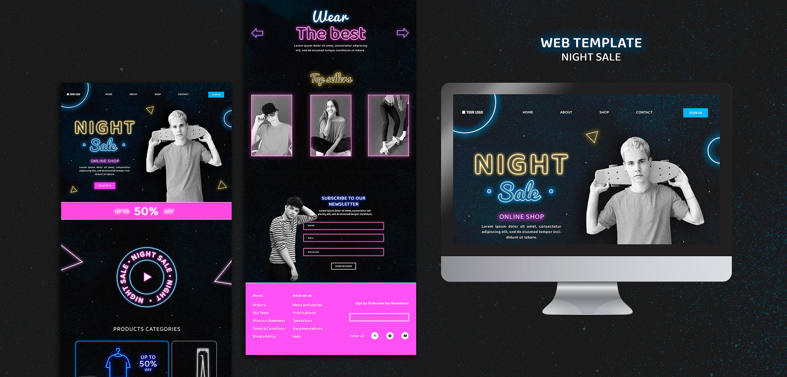

Чем отличается сайт от блога?
Чем отличается сайт от блога: разбираем ключевые различия.
💻 Многие пользователи интернета используют термины «сайт» и «блог» как синонимы, не задумываясь о реальных различиях. Однако с точки зрения структуры, функционала и целей эти понятия существенно отличаются. Разберёмся, в чём заключаются ключевые отличия и как выбрать подходящий формат для Ваших задач.
📄 Что такое сайт?Сайт (от англ. website) — это совокупность веб‑страниц, объединённых общей темой, дизайном и доменом. Это универсальный инструмент для представления информации в интернете, который может выполнять множество функций: демонстрация товаров и услуг, онлайн‑продажи (интернет‑магазины), предоставление справочной информации, корпоративное представительство, портфолио и резюме, а также работа в качестве сервисов и приложений. Для сайта характерна многофункциональность — он может включать каталог товаров, формы заказа, личный кабинет, форум, базу знаний и другие модули. Ему присуща чёткая структурированность с иерархией разделов и подразделов и продуманной навигацией. Контент на сайте обычно носит статичный характер — обновляется не регулярно, а по мере необходимости. Чаще всего сайт имеет коммерческую направленность и ориентирован на привлечение клиентов и монетизацию. С технической точки зрения сайт может использовать сложные CMS, фреймворки и базы данных.
📝 Что такое блог?Блог (от англ. web log — «сетевой журнал») — это онлайн‑дневник или платформа для публикации регулярных записей (постов) в хронологическом порядке. Изначально блоги создавались как личные дневники, но сегодня они стали мощным инструментом контент‑маркетинга. Ключевой особенностью блога является хронологическая подача: новые записи появляются сверху, формируя «ленту» публикаций. Контент в блоге публикуется регулярно — ежедневно, еженедельно или по другому графику. Для блогов часто характерен личный стиль изложения: они содержат авторское мнение, эмоции и субъективную оценку. Важная черта блога — интерактивность: как правило, предусмотрены комментарии, обсуждения и механизмы обратной связи с аудиторией. Основной фокус блога — на контенте: текстах, фото, видео и подкастах.
🎯 Если рассматривать цель создания, то сайт предназначен прежде всего для представления информации и осуществления продаж, тогда как блог нацелен на обмен мыслями и построение сообщества вокруг автора или темы. В плане структуры сайт выстраивается по иерархическому принципу с разделами и подразделами, а блог организован хронологически в виде ленты постов. По частоте обновления сайт предполагает внесение изменений по мере необходимости, в то время как блог требует регулярного наполнения по установленному графику. С точки зрения характера контента сайт содержит справочную и коммерческую информацию, а блог — личный, авторский и развлекательный материал. В аспекте взаимодействия с аудиторией сайт чаще использует формы обратной связи и онлайн‑чаты, а блог делает ставку на комментарии и дискуссии. Что касается монетизации, сайты обычно ориентированы на прямые продажи и размещение рекламы, а блоги — на партнёрские программы, донаты и рекламные интеграции.
🛠️ Создавать сайт целесообразно в тех случаях, когда необходимо представить компанию или бренд, планируется продажа товаров или услуг, требуется сложная структура с множеством разделов либо важна профессиональная подача материала без личного акцента. Блог будет оптимальным выбором, если Вы хотите делиться личным опытом и мнениями, стремитесь построить лояльное сообщество вокруг своей персоны или темы, планируете регулярно публиковать контент и делаете ставку на развитие личного бренда и формирование доверия аудитории.
🌐 В настоящее время границы между сайтами и блогами постепенно размываются. Многие сайты интегрируют блоговые разделы, чтобы привлекать трафик посредством контент‑маркетинга. В свою очередь, блоги нередко развиваются до полноценных медиа‑ресурсов, включающих интернет‑магазины и различные сервисы. Можно привести несколько характерных примеров такой конвергенции: интернет‑магазин может содержать блог с обзорами и тестированием товаров; личный блог способен трансформироваться в образовательную платформу с платными курсами и вебинарами; корпоративный сайт может включать новостной раздел, оформленный в стиле блога с регулярными публикациями и возможностью комментирования.
💡 Главное отличие сайта от блога заключается в целях создания и формате подачи информации. Сайт выполняет функцию цифровой визитки или онлайн‑магазина, ориентированного на представление информации и коммерческие операции. Блог же представляет собой площадку для диалога с аудиторией и самовыражения автора, где ключевую роль играет регулярный контент и взаимодействие с читателями. При выборе формата следует исходить из конкретных задач: если приоритетом является продажа товаров, услуг или донесение справочной информации — целесообразно создавать сайт; если же основной целью выступает общение с аудиторией и обмен опытом — лучше запустить блог. В ряде случаев оптимальным решением может стать комбинация обоих форматов, позволяющая максимально охватить целевую аудиторию и реализовать разноплановые задачи в рамках единого цифрового пространства.